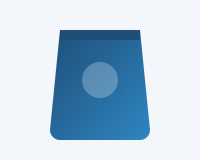
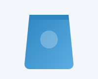
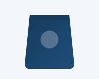
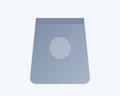
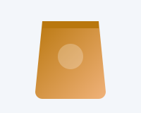
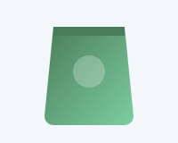

Flexible packaging bags for food, feed, coffee and pet food. All bags can be customized in size, material structure and printing.

Zippable stand-up pouches with optional hang hole, tear notch and spout. Suitable for snacks, dried fruit, nuts, powders and seasonings.
Materials: PET/PE, PET/ALU/PE, MOPP/PE, matte or glossy finish.

High barrier aluminum foil bags with strong moisture and light protection, ideal for long-term storage of dry goods and powders.
Materials: PET/ALU/PE, foil-lined, with or without zipper.

Heat-resistant pouches designed for high-temperature sterilization, used for ready meals, sauces and processed food.
Materials: PET/ALU/RCPP, high-temperature resistant structure.

Heavy-duty laminated or woven bags for fish feed, aquaculture feed, pet feed and agricultural fertilizers, with strong load-bearing performance.
Materials: PP woven, PP/PE laminated, PET/PE heavy-duty structure.

One-way degassing valve pouches in matte or glossy finish, for coffee beans, ground coffee, tea and herbal blends.
Materials: PET/ALU/PE, kraft paper composite, stand-up or flat bottom.

Flat-bottom and quad-seal bags for dog and cat food, with resealable zipper and reinforced handles for larger weights.
Materials: PET/PE, PET/ALU/PE, matte BOPP finish.
Bag type & size · Material structure · Barrier / oxygen properties · Printing colors (digital or gravure) · Zipper, spout, valve, hang hole · Surface finish (matte / glossy / kraft) · Brand artwork support.